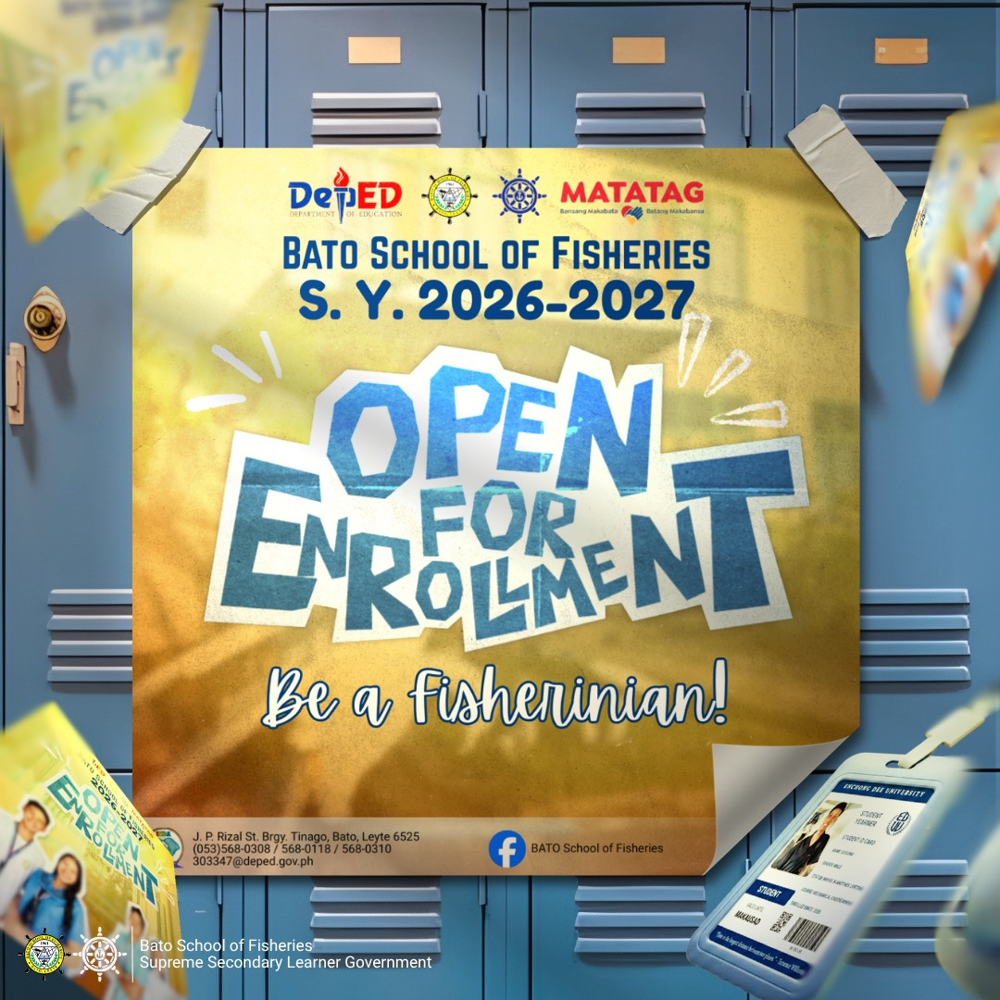

Event
May 7, 2026
📣 ENROLLMENT IS NOW OPEN! 🌊🎓
Be part of the future of fisheries education at Bato School of Fisheries for S.Y. 2026–2027!🐟💙
Stay Updated
Events, enrollment updates, and important news from Bato School of Fisheries.

EventBe part of the future of fisheries education at Bato School of Fisheries for S.Y. 2026–2027!🐟💙
 Election
Election
An event where student leaders present their ideas and vision for the school.